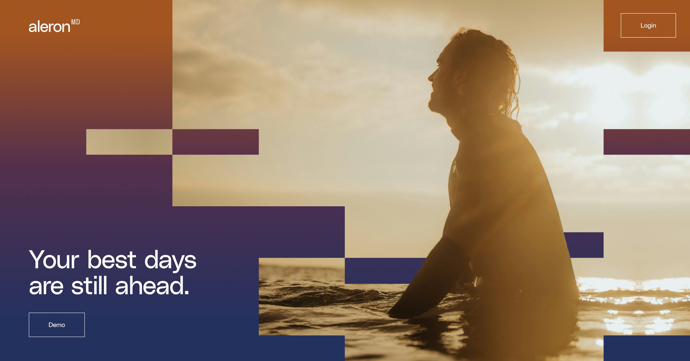

Aleron MD · Internal · Ratification artifact
Ten decisions that are the brand.
A decision log and a living guideline, merged. Each decision is stated in one sentence, reasoned in two, then demonstrated live in the brand's own visual system with real Aleron content. This page is built in the system it describes.
"Aleron MD exists to make 'I'm just getting started' a medically defensible position at any age."
North star · loop/VISION.md
The brand sells one belief, that you might be just getting started, and every surface embodies disciplined vitality.
Most longevity brands sell not dying, which collapses into sterile dashboards or vain immortality, and both are repulsive futures. The feeling we build instead is future nostalgia: missing, in advance, a future you now intend to have. Confidence not vanity. Expression not competition.

"The visual identity is not decoration. It is the embodiment of disciplined vitality."
Brand thesis, set in the system it demandsThe buyer test: an executive looks at this and thinks "that's me in 10 years, and I'm behind on getting there."
Hero subjects read 45 to 60, mid-experience, golden hour, visibly fitter than the viewer at five honest years of work, not a different species.
The 70s are narrated by the curve and the copy, never cast in imagery. Both failure modes are rejected: the weathered survivor and the airbrushed immortal. The subject is the buyer a decade out, close enough to reach, far enough to want.
Pass · Magnetism test
The weathered survivor
Leathered skin, grim endurance, age worn as battle damage. It sells survival, not appetite. The reader feels braced for decline instead of hungry for decades.
The airbrushed immortal
Poreless, ageless, lit like a serum ad. It sells vanity, and vanity fails the surgeon test. A different species cannot be a destination.
Serif carries the thesis, manifesto, and section headlines. Sans carries body, labels, and data.
Source Serif 4 plus Inter Tight, the lineage shared by the deck and landing-loop. The grammar: the headline names the job, the body explains the path, the label locates the reader. Proposed, not locked, because the three landing permutations disagreed on where serif begins. landing-loop currently sets headlines in Inter Tight and reserves serif for ledes and quotes. This page sets headlines in serif as the codification candidate. Jason ratifies.
Your best days are still ahead.
The story of your future is written on top of this curve.
A small kit arrives at your door.
Spit in the tube, drop it in the prepaid mailer. The 163-gene Invitae panel screens for the variants that actually change a care plan.
Step 02 · Genetics
Four colors, four jobs. Navy is authority, bronze is accent, rust is signal, cream is ground.
A color without a role is decoration, and decoration is banned. Every hex below is pulled verbatim from the CSS custom properties in jobs/landing-loop/index.html. No new values were invented for this guide.
07 · Membership
Your curve is already being written. Decide who holds the pen.
One real excerpt, all four roles live: rust eyebrow, serif headline on cream paper, navy card carrying authority, bronze label on dark. Source: jobs/landing-loop close section.
Square geometric blocks anchor photography. Squares everywhere, zero border-radius, and every block must earn a job.
Navy and rust blocks are compositional instruments with exactly three legal jobs: frame, anchor, label. A block doing none of those is decoration and gets cut. No pills, no capsules, no glows. The CSS of this page contains zero border-radius declarations.

The rounded capsule is the universal costume of the wellness app. The moment a tag goes pill-shaped, Aleron reads like everyone else's free trial. Corners stay at 90 degrees, including eyebrows, buttons, image masks, and chart markers.
Golden-hour warmth, motion or mid-experience, environment present. Never clinical, never posed at camera, never stock happy senior.
Forest, ocean, road, canyon. The environment does half the talking because the product is a life, not a clinic. Tribes and singular experiences are both valid: the solo runner and the surfers together pass the same test. Patients, models, and exam rooms never appear.



Say the specific true thing. No adjectives doing the work of facts, and clinical values always carry units.
Banned filler: best life, optimize your health, unlock, journey, empower, holistic. Vanilla copy is a content problem, not a tone problem: if a line could fit any concierge clinic, it carries no information. No em dashes anywhere, including this artifact. Periods and commas.
We use cutting-edge biomarker testing to optimize your health.
The Elite panel through Quest. ApoB, Lp(a), hsCRP, fasting insulin, and 80+ markers across metabolic, cardiovascular, inflammatory, renal, hepatic, and micronutrient domains.
Comprehensive genetic insights to empower your wellness journey.
The 163-gene Invitae panel screens for the variants that actually change a care plan: moderate-penetrance cancer risks, cardiovascular variants, and pharmacogenomic markers that change which drugs work for you.
Unlimited concierge access so you can live your best life.
24/7 telemedicine with a physician who already has your full picture: your data, your genetics, your history. No repeating yourself.
Acquisition says Apply for Membership, the header says Log In, and every page closes with both lanes.
Application implies selection, which is the truthful posture of a practice that opens in waves. The casual four-letter invite verb is banned on every surface. The close is always dual: individual lane on navy with the price visible, employer and broker lane on light, visually distinct, individual dominant.
One physician, your full data picture, and a plan that keeps working between visits.
Bring physician-led preventive care to the people you cover.
We'll show you how Aleron fits alongside your existing benefits.
For EmployersHeader carries Log In for returning members. Buttons here are inert excerpts. On mobile the lanes stack, individual first.
$4,200/yr, stated plainly. All in. No add-on billing.
Confidence, not apology. Against an executive-health field that hides its math, stating the number in the open is the premium signal. The price never shrinks, never hides behind a call, and never gains an asterisk.
$4,200/yr
All in. No add-on billing.Field reference: Human Longevity runs $8,000 to $19,500/yr. Fountain Life starts at $10,500/yr. Wild Health runs $25,000+/yr. Aleron states its number in the open and lets the comparison do the selling.
The lockup is lowercase aleron with a superscript bronze MD, on navy or cream only.
Running prose may say Aleron MD, but the lockup never mixes case. No glow, no fade, no recolor outside the palette. The superscript MD is the one place bronze is mandatory rather than optional.
aleronMD
aleronMD
aleronMD
aleronMD
aleronMD
aleronMD
- Mixed-case "Aleron" in the lockup. The lowercase a is the mark. Prose may capitalize, the lockup may not.
- A glow, drop shadow, or outer halo behind the mark. Glows are the grammar of crypto landing pages.
- A fade or gradient fill inside the letterforms. The mark is solid ink or solid inverse, nothing in between.
- Any recolor outside navy, ink, cream inverse, and the bronze MD. No seasonal variants, no partner tints.